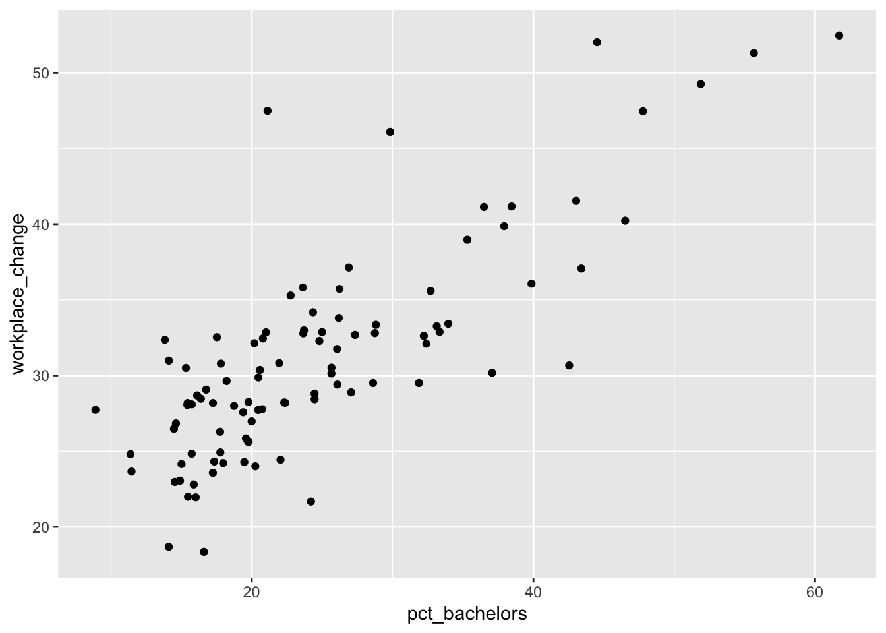
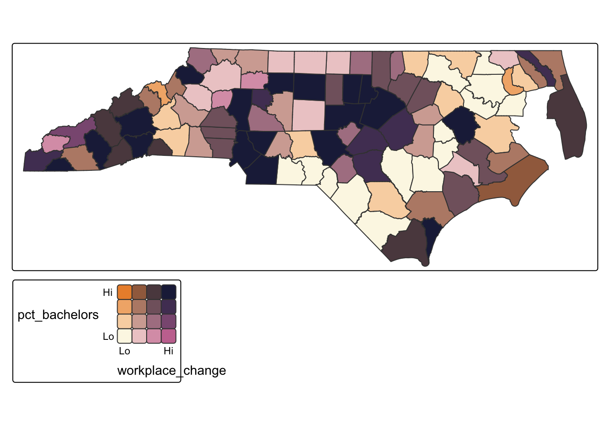
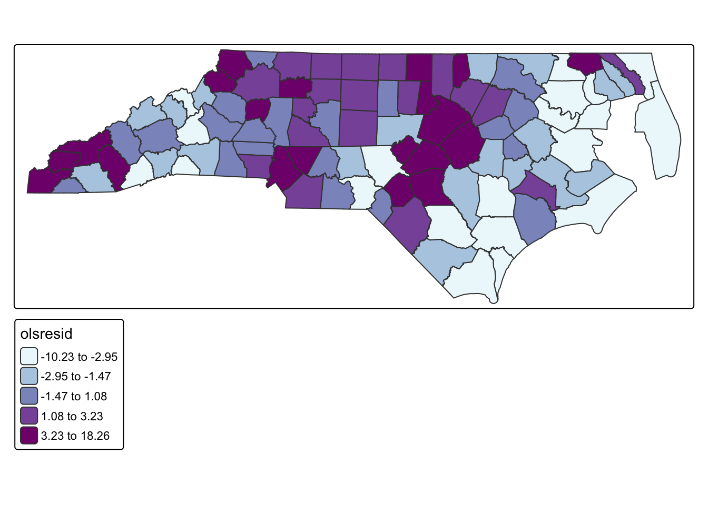

library(tidyverse)
library(tmap)
library(sf)
library(spatialreg)
library(spdep)
#turn negative into positive, higher values mean MORE workplace change (i.e. less travel to workplaces)
county_covid <- st_read("https://drive.google.com/uc?export=download&id=15njmLhQMvg4KNpFthR0XyS1LD3reotus") |> mutate(workplace_change = workplace_change * -1)17 Bivariate Relationships and Regression
In this chapter, we will explore relationships between two variables. There are multiple ways to explore bivariate relationships, including visual and descriptive approaches such as scatterplots and bivariate maps that allow us to identify patterns without making causal claims. These methods help us understand how two variables co-vary across space.
Linear regression provides a statistical framework for modeling relationships between two variables and evaluating whether an observed association is unlikely to have occurred by chance. Ordinary least squares (OLS) regression allows us to test hypotheses about the strength and direction of a relationship. However, like hypothesis tests, standard regression models assume that observations are independent. When spatial dependence is present, OLS regression can produce biased estimates. When spatial dependence is present, we can use alternative, spatially-explicit regression approaches.
The models in this chapter (OLS, SLM, SEM) are based on frequentist inference. This means we treat our parameters (like the effect of a Bachelor’s degree) as fixed, unknown constants. We use Maximum Likelihood Estimation (MLE) to find the single most likely value for these parameters based on our data.
We will use a spatial dataset representing decrease in workplace mobility in the first months of the COVID-19 pandemic across North Carolina counties, as well as 2019 ACS estimates for Bachelor’s degree attainment.
To follow along with this tutorial, make a new .Rmd document. As you move through the tutorial add chunks, headers, and relevant text to your document.
17.1 Testing Correlation
Correlation provides a single summary measure of the strength and direction of association between two numeric variables. The Pearson correlation coefficient ranges from −1 to 1, where values closer to −1 or 1 indicate stronger linear relationships, and values near 0 indicate little to no linear association. Correlation is useful as an initial diagnostic
#test correlation
cor(county_covid$pct_bachelors, county_covid$workplace_change)[1] 0.7981348Q1: What does our correlation value tell us about the strength and direction of the relationship between changes in workplace mobility during covid and the percent of people with a Bachelor’s degree in each county?
17.2 Scatterplot
One of the simplest visualizations we can use to explore bivariate relationships is a scatterplot. For instance, if we want to explore the relationship between our no health insurance variable and our poverty variable, we could do the following
ggplot(county_covid, aes(x = pct_bachelors, y= workplace_change)) + geom_point() 
17.3 Bivariate Map
While scatterplots ignore geography, bivariate maps allow us to explore how two variables co-vary across space. A bivariate map classifies each variable into categories (for instance, quantiles) and combines them into a single color scheme, making it possible to identify areas where both variables are simultaneously high or low.
#bivariate map based on quantiles
tm_shape(county_covid) +
tm_polygons(fill = tm_vars(c("pct_bachelors", "workplace_change"), multivariate = TRUE),
fill.scale = tm_scale_bivariate(values ="bivario.folk_warmth",
scale1 = tm_scale_intervals(n = 4, style = "quantile", labels = c("Lo", "", "", "Hi")),
scale2 = tm_scale_intervals(n=4, style = "quantile", labels = c("Lo", "", "", "Hi"))))
Q2: What does our bivariate map tell us about where the relationships between these two variables are the strongest?
17.4 Regression
Linear regression provides a formal statistical framework for modeling the relationship between two variables. In an ordinary least squares (OLS) regression, we estimate the expected value of a dependent variable as a linear function of an independent variable. OLS allows us to quantify the strength and direction of the relationship and to assess whether the observed association is unlikely to have occurred by chance.
For the following model, assume that the assumptions (besides independence) have been met to use an OLS. To interpret the strength, direction, and significance of the model below, we will examine the coefficients, adjusted R-squared, and the p-values of the coefficient and the model overall. For example, this model tells us that the baseline percent change (with 0% bachelor degree) is 17%, that every .5% increase in Bachelor’s degree percentage is associated with a 1% increase in workplace change (decreased mobility). This coefficient is statistically significant. Our Adjusted R-squared value tells us that our model explains 63% of the variation in workplace change and our model p-value tells us that the model itself is statistically significant.
#traditional regression
ols_model <- lm(workplace_change ~ pct_bachelors, data = county_covid)
#see results
summary(ols_model)
Call:
lm(formula = workplace_change ~ pct_bachelors, data = county_covid)
Residuals:
Min 1Q Median 3Q Max
-10.2312 -2.7965 -0.1164 2.1867 18.2634
Coefficients:
Estimate Std. Error t value Pr(>|t|)
(Intercept) 17.7051 1.1202 15.80 <2e-16 ***
pct_bachelors 0.5452 0.0420 12.98 <2e-16 ***
---
Signif. codes: 0 '***' 0.001 '**' 0.01 '*' 0.05 '.' 0.1 ' ' 1
Residual standard error: 4.254 on 96 degrees of freedom
Multiple R-squared: 0.637, Adjusted R-squared: 0.6332
F-statistic: 168.5 on 1 and 96 DF, p-value: < 2.2e-16However, OLS regression relies on several assumptions, including that observations are independent. One way to evaluate whether spatial dependence is present is to examine the residuals from an OLS regression. If the model has adequately captured the underlying process, residuals should be randomly distributed across space. Spatial clustering in residuals suggests that important spatial structure remains unmodeled. A statistically significant Moran’s I indicates that the independence assumption of OLS has been violated and that a spatial regression approach may be more appropriate.
#add residuals as a variable
county_covid <-county_covid |> mutate(olsresid = resid(ols_model))
#map residuals
tm_shape(county_covid) + tm_polygons(fill = "olsresid",fill.scale = tm_scale_intervals(values = "bu_pu", style = "quantile", n = 5))Multiple palettes called "bu_pu" found: "brewer.bu_pu", "matplotlib.bu_pu". The first one, "brewer.bu_pu", is returned.
#calculate neighborhoods
nb <- poly2nb(county_covid, queen = TRUE)
#set neighborhood weight matrix
nbw <- nb2listw(nb, style = "W")
#calculate Morans I
gmoran <- moran.test(county_covid$olsresid, nbw)
gmoran
Moran I test under randomisation
data: county_covid$olsresid
weights: nbw
Moran I statistic standard deviate = 5.3026, p-value = 5.71e-08
alternative hypothesis: greater
sample estimates:
Moran I statistic Expectation Variance
0.330622034 -0.010309278 0.004133931 Q3: Do our results indicate that we should use a spatial model?
17.5 Spatial Regression
When spatial dependence is present, we can use spatial regression models that explicitly incorporate spatial structure. Two common approaches are the spatial lag model and the spatial error model. Traditional spatial regressions considers spatial autocorrelation as a property that should be accounted for or removed to obtain unbiased estimates. While frequentist models like SEM treat spatial autocorrelation as ‘noise to be removed,’ we can also think of it as a latent (hidden) process. In the next unit, we will see how Bayesian models treat this spatial structure as a ‘random effect’ that we can map and analyze in its own right.
There are two main models that can account for spatial dependence.
The spatial lag model includes a spatially lagged version of the dependent variable, allowing outcomes in one location to be influenced by outcomes in neighboring locations. This approach is appropriate when the process itself is spatially contagious or when values diffuse across space.
The spatial error model, in contrast, assumes that spatial dependence operates through the error term rather than through direct interaction between dependent variables. This approach is appropriate when unobserved spatial processes affect the outcome but are not explicitly included in the model.
#lag model
fit.lag<-lagsarlm(workplace_change ~ pct_bachelors,
data = county_covid,
listw = nbw)
#see results
summary(fit.lag)
Call:lagsarlm(formula = workplace_change ~ pct_bachelors, data = county_covid,
listw = nbw)
Residuals:
Min 1Q Median 3Q Max
-10.0665446 -2.0402522 -0.0087854 1.4828038 16.3029135
Type: lag
Coefficients: (asymptotic standard errors)
Estimate Std. Error z value Pr(>|z|)
(Intercept) 5.65338 2.40201 2.3536 0.01859
pct_bachelors 0.47263 0.03912 12.0814 < 2e-16
Rho: 0.44395, LR test value: 23.78, p-value: 1.0797e-06
Asymptotic standard error: 0.082584
z-value: 5.3757, p-value: 7.6272e-08
Wald statistic: 28.898, p-value: 7.6272e-08
Log likelihood: -268.0403 for lag model
ML residual variance (sigma squared): 13.256, (sigma: 3.6409)
Number of observations: 98
Number of parameters estimated: 4
AIC: 544.08, (AIC for lm: 565.86)
LM test for residual autocorrelation
test value: 0.8593, p-value: 0.35393#error model
fit.error<-errorsarlm(workplace_change ~ pct_bachelors,
data = county_covid,
listw = nbw)
#see results
summary(fit.error)
Call:
errorsarlm(formula = workplace_change ~ pct_bachelors, data = county_covid,
listw = nbw)
Residuals:
Min 1Q Median 3Q Max
-8.82518 -2.08173 -0.37913 1.55315 15.64620
Type: error
Coefficients: (asymptotic standard errors)
Estimate Std. Error z value Pr(>|z|)
(Intercept) 18.897359 1.298656 14.552 < 2.2e-16
pct_bachelors 0.501675 0.039237 12.786 < 2.2e-16
Lambda: 0.59034, LR test value: 22.774, p-value: 1.8218e-06
Asymptotic standard error: 0.096719
z-value: 6.1037, p-value: 1.0366e-09
Wald statistic: 37.255, p-value: 1.0366e-09
Log likelihood: -268.5434 for error model
ML residual variance (sigma squared): 12.816, (sigma: 3.5799)
Number of observations: 98
Number of parameters estimated: 4
AIC: 545.09, (AIC for lm: 565.86)The spatial lag model examines how workplace change in one county is influenced not only by the percent of the population with a bachelor’s degree in that county, but also by workplace change in neighboring counties. The model indicates that for every 1 percentage point increase in the population with a bachelor’s degree, workplace change increases by approximately 0.47 units. The spatial parameter (Rho = 0.44) is positive and significant, meaning counties tend to resemble their neighbors in terms of workplace change. Model fit is improved compared to standard OLS, as shown by a lower AIC (544.08 vs. 565.86). Residuals show no significant spatial autocorrelation after accounting for the lag, suggesting the model adequately captures the spatial dependence.
The spatial error model accounts for unobserved spatial autocorrelation in the error term rather than in the dependent variable. In this model, every 1 percentage point increase in the population with a bachelor’s degree is associated with an increase of roughly 0.50 units in workplace change. The spatial error parameter (Lambda = 0.59) is positive and significant, indicating that unexplained variation in workplace change is spatially structured. Like the lag model, the AIC is lower than OLS (545.09), showing an improvement in model fit. This model assumes that spatial dependence exists in unobserved factors rather than directly through neighboring counties’ values.
Both models show that higher educational attainment is strongly associated with greater workplace change. The choice between the models depends on the assumed mechanism of spatial dependence. The lag model suggests that counties are directly influenced by the workplace change of neighboring counties, while the error model implies that spatial correlation exists only in unmeasured factors. Based on the context of workplace mobility—where nearby counties are likely to respond to similar conditions, policies, or commuting patterns—the spatial error model is likely the more realistic representation of the process.